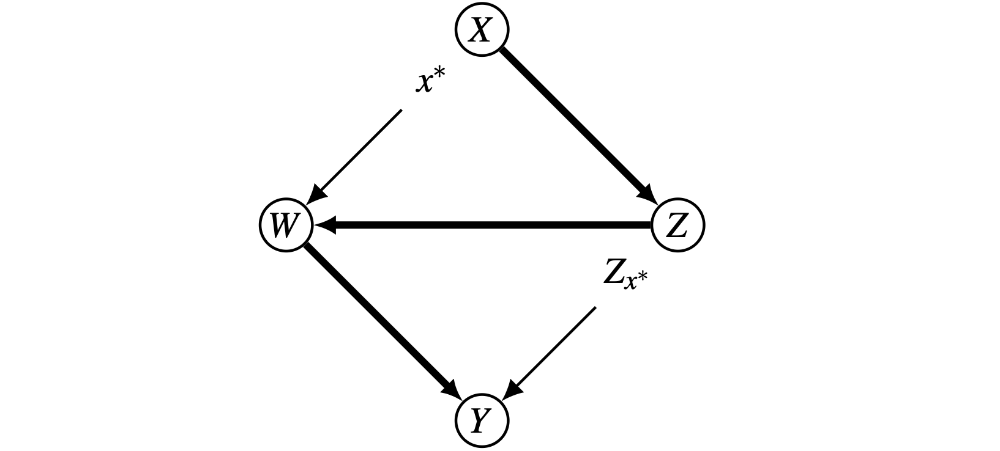
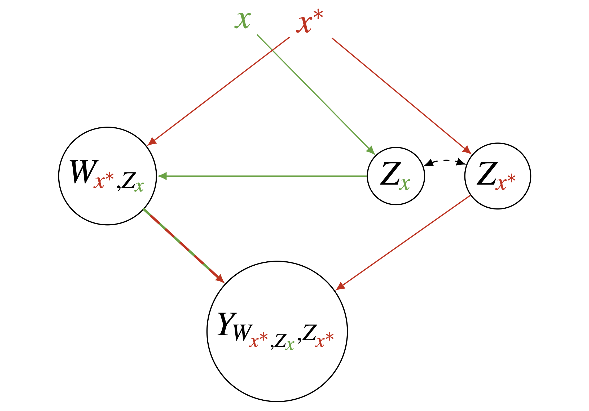

1. Introduction
인과추론(Causal Inference)에서 가장 흥미롭고도 도전적인 과제 중 하나는 ’효과를 분해(Decomposition)’하는 것입니다.
우리가 \(X\)가 \(Y\)에 미치는 전체 효과(Total Effect)를 알았다면, 그 다음 질문은 자연스럽게 “그 효과가 직접적인 경로로 발생했는가, 아니면 매개변수 \(Z\)를 거쳐서 발생했는가?”로 이어집니다.
전통적인 방식(Baron & Kenny 등)은 선형 모델에 의존하지만, 현실의 데이터 생성 과정은 비선형적이고 상호작용(Interaction)이 가득합니다.
Judea Pearl은 이러한 한계를 극복하기 위해 경로 특정 효과(Path-Specific Effects, PSE)라는 일반화된 프레임워크를 제안했습니다.
본 포스트는 비선형 모델에서도 적용 가능한 직접·간접 효과의 정의와 이를 뒷받침하는 수학적 구조, 그리고 인과적 공리(Axioms)를 깊이 있게 다룹니다.
2. Path-Specific Effects (PSE)
2.1. The Motivation: Beyond Simple Mediation
- 단순한 매개 모형(Simple Mediation Model)에서는 \(X \to Y\) (직접 경로)와 \(X \to Z \to Y\) (간접 경로)만이 존재합니다. 하지만 실제 인과 구조는 훨씬 복잡할 수 있습니다. 변수 간의 화살표가 얽혀 있는 상황에서 우리가 관심 있는 특정 경로들의 집합(subset of paths)만을 분리해내어 그 효과를 추정하고 싶을 때, Path-Specific Effect 개념이 필요합니다.

2.2. Definition and Formalization
- Path-Specific Effect를 정의하기 위해 Pearl은 변수 고정(Variable fixing)이 아닌 경로 스위칭(Path switching)이라는 개념을 도입했습니다.
Step 1: Edge-Subgraph의 정의
- 우선 전체 인과 그래프(Causal Graph)를 \(G\)라고 합시다. 우리가 효과를 분석하고 싶은 경로들로만 이루어진 하위 그래프(Edge-subgraph)를 \(g\)라고 정의합니다.
- 이때, 모델의 각 변수 \(X_i\)에 대해 부모 변수 집합 \(PA_i\)를 두 부분으로 나눌 수 있습니다: \[
PA_i = \{ PA_i(g), PA_i(\bar{g}) \}
\]
- \(PA_i(g)\): 그래프 \(g\)에 포함된 엣지를 통해 \(X_i\)에 연결된 부모 변수들 (활성화된 경로)
- \(PA_i(\bar{g})\): 그래프 \(g\)에 포함되지 않은 엣지를 통해 연결된 부모 변수들 (비활성화된 경로)
Step 2: Modified Structural Equations
이제 경로 특정 효과를 계산하기 위해 구조방정식(Structural Model)을 수정합니다.
원래 모델 \(M\)에서의 구조방정식이 \(x_i = f_i(pa_i, u_i)\)라면, 수정된 모델 \(M_{g}^*\)에서의 새로운 함수 \(f_i^*\)는 다음과 같이 정의됩니다.
\[ f_i^*(pa_i, u; g) = f_i(pa_i(g), pa_i^*(\bar{g}), u) \]
이 수식의 의미는 매우 직관적입니다:
- 관심 있는 경로(\(g\))를 통해 들어오는 입력(\(pa_i(g)\))은 처치 \(X=x\)의 영향을 받아 변하게 둡니다.
- 관심 없는 경로(\(\bar{g}\))를 통해 들어오는 입력(\(pa_i^*(\bar{g})\))은 기준값 \(X=x^*\)일 때의 값으로 고정합니다.
- 즉, \(pa_i^*(\bar{g}) = PA_i(\bar{g})_{x^*}\) 입니다.
Step 3: The g-Specific Effect Definition
최종적으로, 기준값 \(x^*\) 대비 처치 \(x\)가 \(Y\)에 미치는 \(g\)-specific effect는 수정된 모델 \(H_{g}^*\)에서의 전체 효과(Total Effect)로 정의됩니다.
\[ SE_{g}(x, x^*; Y, u)_{M} = TE(x, x^*; Y, u)_{M_{g}^*} \]
이 정의는 비선형 모델이나 상호작용 항이 있는 경우에도 직접 효과와 간접 효과를 일관성 있게 정의할 수 있게 해줍니다.
3. Nested Counterfactuals: A Visual Interpretation
- 이 개념을 명확히 이해하기 위해, 일명 “Kite Graph” (또는 Diamond Graph) 예시를 살펴봅시다.

- 위 그림과 같은 구조에서 특정 경로의 효과를 계산하려면, 우리는 가상의 세계(Counterfactual world)를 상상해야 합니다. 아래 그림은 \(X\)가 \(x\)(녹색)일 때와 \(x^*\)(적색)일 때의 신호가 어떻게 섞여서 \(Y\)에 도달하는지를 보여주는 Counterfactual Graph입니다.

이 그림에서 가장 주목해야 할 점은 Recanting Witness 문제와 관련된 복잡한 항입니다:
\[ Y_{W_{x^*, Z_x}, Z_{x^*}} \]
이 수식을 분해해보면 다음과 같습니다:
- \(Z\)는 \(x\)의 영향을 받습니다 (\(Z_x\), 녹색 경로).
- \(W\)는 \(X\)로부터는 \(x^*\)의 영향을 받지만(적색 경로), \(Z\)로부터는 \(x\)의 영향을 받은 값(\(Z_x\))을 입력받습니다. 즉, \(W\)는 \(W_{x^*, Z_x}\)가 됩니다.
- 최종적으로 \(Y\)는 \(W\)로부터는 혼합된 신호를 받고, \(Z\)로부터는 순수한 \(x^*\)의 영향(\(Z_{x^*}\))을 받습니다.
이러한 중첩된 반사실(Nested Counterfactuals)의 구조를 이해하는 것은 매개 분석에서 교란 요인을 통제하고 순수한 메커니즘을 식별하는 데 필수적입니다. Pearl은 Markovian 모델에서는 이러한 조건들이 항상 만족되어 추정이 가능함을 보였습니다.
4. Axioms of Causal Inference
- 이러한 복잡한 반사실적 조작이 논리적으로 타당하려면, 몇 가지 기본적인 공리(Axioms)가 성립해야 합니다.
4.1. Composition (합성)
- 어떤 변수 \(W\)를 강제로 \(w\)라는 값으로 고정했다고 가정합시다. 만약 우리가 \(X\)에 개입했을 때 \(W\)가 자연스럽게 갖게 될 값이 이미 \(w\)라면, \(W\)를 \(w\)로 강제하는 개입은 \(Y\)에 아무런 추가적인 영향을 주지 않는다는 원칙입니다.
\[ W_x(u) = w \implies Y_{xw}(u) = Y_x(u) \]
- 즉, “이미 발생할 일이었다면, 강제로 시켜도 결과는 같다”는 뜻입니다.
4.2. Consistency (일치성)
- 만약 관측된 데이터에서 \(X=x\)라면, 그때 관측된 \(Y\)는 \(X\)를 \(x\)로 강제했을 때의 잠재적 결과 \(Y_x\)와 같아야 합니다.
\[ X(u) = x \implies Y(u) = Y_x(u) \]
4.3. Effectiveness and Reversibility
- Effectiveness (유효성): 변수 \(X\)와 \(W\)를 각각 \(x, w\)로 고정하면, \(X\)의 값은 확실히 \(x\)가 됩니다. \[X_{xw}(u) = x\]
- Reversibility (가역성): 만약 \(X\)를 고정했을 때 \(Y, W\)가 각각 \(y, w\)가 되고, 이 상태들이 서로 모순되지 않는다면 원래의 효과 \(Y_x\)는 \(y\)로 유지됩니다. \[(Y_{xw}(u) = y) \land (W_{xy}(u) = w) \implies Y_x(u) = y\]
5. Conclusion
Pearl의 Path-Specific Effects 프레임워크는 단순히 변수를 통제하는 것을 넘어, 인과 경로를 정밀하게 수술(surgery)하듯 분리해내는 강력한 도구입니다.
- 비선형성 해결: 선형 가정 없이도 직접/간접 효과를 정의할 수 있습니다.
- 조작적 해석: 간접 효과에 대한 명확한 조작적(operational) 해석을 제공합니다.
- 일반화: Markovian 모델 등 특정 조건 하에서, 실험 데이터나 관측 데이터로부터 이러한 효과를 일관되게 추정할 수 있습니다.
이러한 이론적 토대는 복잡한 사회 현상이나 생물학적 메커니즘을 규명하는 데 있어 단순 회귀분석이 줄 수 없는 깊은 통찰을 제공합니다.